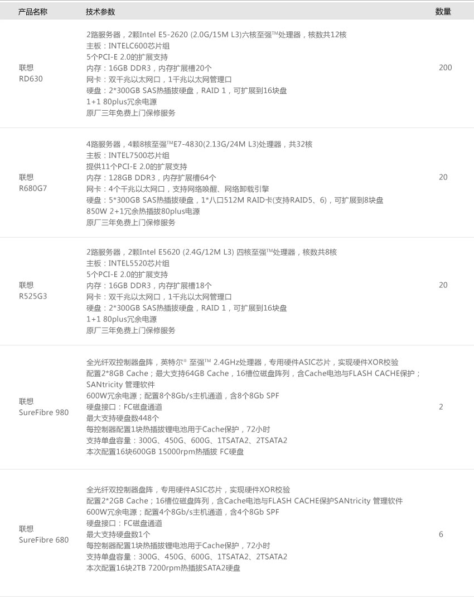

在统一的网络基础设施支撑下，建立和整合全省监狱系统统一的信息资源库,构建与政务业务紧耦合、完全自主可控的统一信息安全防护体系，在统一的标准及规范体系支撑下，建立目录服务、信息安全服务和政务信息交换等系统，并通过内、外网服务接入门户，基于基础功能平台支撑并运行的社会应急、监测分析、政务公开、行政执法和内部管理5大政务功能平台，建设覆盖全省监狱系统的监管安全、罪犯管理、狱务公开等三大业务系统44个业务子系统。
整体方案拓扑图：
面对在项目中提出的复杂要求，联想成立专门的项目组，严格考察各级监狱应用系统的构架情况，针对不同的平台需求特点，为该项目推荐了适用于不同场景的五款核心高性能服务器存储产品：RD630、R680 G7、R525 G3、SureFibre980、 SureFibre680，作为本次项目的主力平台产品。
由联想R680 G7服务器承载省局数据中心数据库和核心应用。
由联想ThinkServer RD630服务器构建省级中心管理服务器、监控系统服务器、GIS服务器和各级监狱应用服务器。 由Surefire 980和680构建SAN存储系统。
其主要优势体现在：
联想ThinkServer RD630为2012年6月最新发布的高性能双路服务器，在计算性能、存储性能、网络吞吐能力等方面拥有优秀的性能表现。RD630装备英特尔®最新的E5-2600系列处理器，借助全新的构架设计，极大提高了系统总线的带宽，同比资源投入下，平台的整体计算能力较前代产品提高60%以上。充分体现其核心两路平台的高性能特点。
联想ThinkServer RD630服务器采用业界一流的五年设计寿命，保证用户投资，并吸取全球用户对于品质和安全的要求并落实到产品中。240VA安全设计来自美国FCC的要求，Smokeless安全设计是来自日本的质量要求，4000V防雷击设计相比中国1500V的国家标准提升了2倍以上。顺滑启动散热系统的采用能够有效减少因瞬时电流过大而造成的系统宕机风险。
联想ThinkServer RD630服务器在关键部件上均采用冗余构架设计，处理器、内存、硬盘、电源、风扇等主要部件均可实现冗余机制，以 避免单点故障保证系统稳定运行。
联想ThinkServer RD630服务器凭借优异的性能表现和良好的性价比特点，特别适用于部门级关键业务处理、中小规模核心数据服务，大 型办公自动化、中型虚拟化服务等重要应用。
联想R680 G7 服务器装备性能强劲的英特尔®至强TME7-4800系列处理器，在内存、磁盘I/O、网络吞吐等方面，均采用了优化式的设计思路，以体现其高性能平台的特点。
联想R680 G7 服务器采用全冗余构架设计，处理器、内存、硬盘、电源、风扇等主要关键部件均可实现冗余机制，有效避免了单点故障，最大程度的提高了系统稳定性。同时，系统具有双重侦错功能，可通过慧眼管理软件，实时监控各个主要部件的运行状态；主板的BMC芯片自动对部件进行侦错检索，将可能或已经发生的问题通过故障指示灯显示出来，实现可靠性极高的自动故障诊断！
联想R680 G7 服务器作为联想核心四路服务器平台，特别适用于大规模核心数据处理、可靠性要求极高的关键业务、大型网络的主干服务、大型虚拟化综合服务等重要应用。
联想SureFibre980作为一款企业级高端光纤存储产品，可用于大型数据中心的存储基础架构，可实现数据备援与业务容灾等高端应用。更可 胜任企业资源计划系统(ERP)、邮件服务器、数字媒体资产管理等高端应用。基于先进的体系架构设计，联想SureFibre980能够提供出色的 数据存储访问性能，缓存突发性能达到700000的IOPS，最大的磁盘持续读传输可达170000IOPS，最大的磁盘持续读传输可达 6400MB/s，与同档次产品相比，性能突出。
本此项目共采用联想ThinkServer RD630 200台，R680 G7 20台，R525 G3 20台，SureFibre980 2台，SureFibre680 4台：
在本次信息化设备采购项目中，联想根据监狱管理信息系统的业务特点，提供了具有很强针对性的产品平台，其以优异的性能表现和稳定的运行能力，保证了使用单位各关键业务的工作需求；同时最大程度的为客户节省了投资成本，并为将来的系统升级预留了足够的空间！